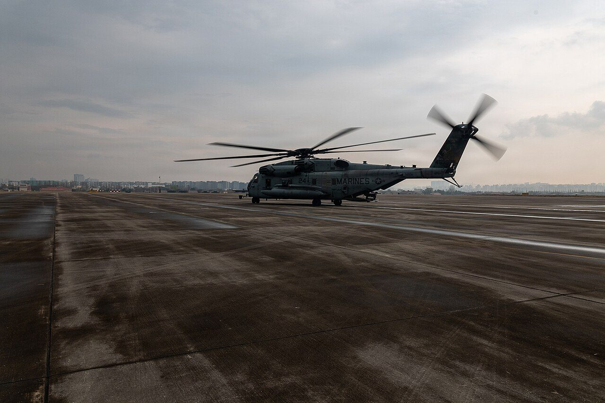
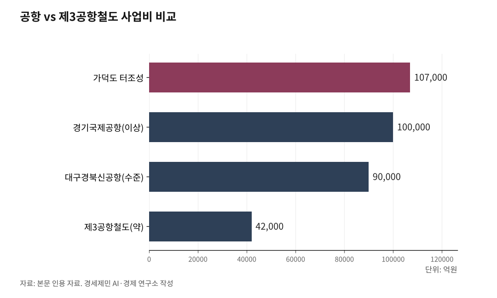

기후위기 시대, 경기국제공항보다 '제3공항철도'가 낫다
**경기도 '경기국제공항' 추진 vs 탄소중립 시대 역행 논란**
**경기국제공항 최소 10조원 vs 제3공항철도 4조원**
**인천공항서 영흥도·대부도 경유 화성까지 50여㎞ 약 30분대 접근**
AI경세제민=김갑봉 기자 | 경기도가 추진하는 경기국제공항 건설이 기후위기 시대에 맞는 선택인지 되물어야 한다. 가덕도신공항 터 조성에만 10조7000억원이 드는 현실에서 경기국제공항도 최소 10조원 이상이 예상된다. 같은 돈의 절반도 안 되는 4조원으로 인천국제공항과 화성을 철도로 연결하면 탄소 배출을 줄이면서도 30분대 접근성을 확보할 수 있다. 경기국제공항 대신 '제3공항철도'를 제안한다.

경기도의 '경기국제공항' 구상
경기도는 2024년 11월 경기국제공항 건설 후보지로 화성시 화성호 간척지, 평택시 서탄면, 이천시 모가면 3곳을 선정했다. 270만㎡ 터에 3200m 활주로 1개를 갖춘 국제공항을 2035년 개항한다는 계획이다.
경기도 자체 수요 분석 결과를 보면 2035년 여객수요는 1247만~1471만명, 2065년에는 1775만~2080만명에 이를 것으로 추정했다. 화물수요도 2035년 21만~28만톤에서 2065년 30만~41만톤으로 늘어날 것으로 내다봤다.
경기도는 도민 약 34%가 인천국제공항과 김포국제공항을 이용하는데 평균 1시간22분이 걸려 불편하다는 점을 내세운다. 경기남부 반도체 메가 클러스터 등 첨단산업단지의 물류 수요를 감당하려면 경기국제공항이 필수라는 논리다.
하지만 후보지 지역에서는 반발이 거세다. 화성시의회 의장은 화성호 간척지 공항 건설에 대해 "절대 용납할 수 없다"는 입장을 밝혔다. 화성호 간척지는 동아시아-대양주 철새이동경로 파트너십(EAAFP) 네트워크 사이트로 지정된 화성습지(7301ha)에 인접했다. 철새 도래지에 공항을 짓겠다는 것이다. 평택과 이천 지역 주민들도 소음 피해와 고도 제한 등 생활환경 악화를 우려하고 있다.
2025년 9월 서울행정법원이 새만금국제공항 기본계획을 취소한 이유도 조류충돌과 환경파괴를 제대로 검토하지 않았기 때문이다. 경기국제공항도 같은 문제를 안고 있다.

최소 10조원, 과연 경제성 있나
경기국제공항 건설비는 얼마나 들까. 공식 총사업비는 아직 나오지 않았지만 유사 사례로 짐작할 수 있다.
가덕도신공항은 터 조성공사에만 10조7000억원이 든다. 공항 부문 전체로는 13조4913억원, 접근 철도까지 포함하면 16조원을 넘는다. 대구경북통합신공항 이전 사업비도 9조원 수준으로 추산된다.
수도권은 땅값이 비싸다. 대구보다 사업비가 더 클 수밖에 없다. 경기국제공항도 최소 10조원 이상이 들 것으로 예상된다.
문제는 인천공항에서 50㎞도 안 되는 거리에 또 국제공항이 필요하냐는 것이다. 인천공항은 대한민국 항공화물의 99%를 처리하는 동북아시아 허브공항이다. 세계 3위 공항 경쟁력을 확보하고 있다. 여객 부문도 2024년 12월 4단계 확장을 완료해 연간 1억600만명을 처리할 수 있다. 경기도는 2035년경 포화 상태에 이를 것이라고 주장하지만, 인천공항공사는 5단계 확장 계획을 갖고 있다.
뉴욕, 런던 등 글로벌 대도시권이 복수 공항을 운영한다는 논리도 있다. 그러나 이들 도시는 이미 공항이 포화 상태에 이른 뒤 추가 공항을 지었다. 인천공항 확장 여력이 남은 상황에서 수조원을 들여 신공항을 짓는 것은 중복 투자다.
기후위기 시대, 공항 신설이 답인가
기후위기 시대에 공항 신설은 시대착오다. 국제에너지기구(IEA) 자료를 보면 철도는 승객-㎞ 기준 항공 대비 온실가스가 약 5분의 1 수준이다. 영국 정부 환산계수를 적용하면 항공기는 1인·㎞당 0.255㎏의 이산화탄소를 배출한다. 반면 KTX는 0.026㎏에 불과하다. 약 10배 차이다.
국제 학술 자료를 보면 300~800㎞ 단거리에서는 철도가 시간과 탄소 측면에서 경쟁력이 높다는 분석이 많다. 서울-부산 417㎞는 KTX로 최단 약 2시간15분, 서울-광주 268㎞는 약 1시간45분이다. 한국 주요 도시 간 이동거리 대부분이 이 범위에 들어 철도 전환 여지가 크다.
프랑스는 이미 움직였다. 2021년 철도로 2시간30분 이내 대체 가능한 국내선 항공을 금지했다. 파리-리옹, 파리-낭트, 파리-보르도 노선이 폐지됐다. 독일도 고속철도 ICE(인터시티익스프레스) 개통 후 항공 수요가 유의하게 감소했다는 연구가 많다.
새만금공항 취소 판결은 국내 신공항 정책에 경종을 울렸다. 법원은 국토부가 조류충돌과 환경파괴를 제대로 검토하지 않았다고 판단했다. 화성호 간척지도 철새 도래지이자 습지다. 같은 문제를 안고 있다.
후보지 3곳, 이미 철도망 양호
경기국제공항 후보지 3곳은 이미 철도 인프라가 양호하다. 굳이 공항을 지을 이유가 약하다.
평택시 서탄면을 보자. 2026년 12월 수원발 KTX가 개통 예정이다. 수원역에서 서울역까지 약 25분이면 닿는다. 평택지제역도 KTX 정차역이다. 서울역까지 약 35분이다. 김포공항도 수원에서 40~50분이면 간다. 평택·오산 지역은 이미 KTX로 서울역과 김포공항 접근성이 양호하다.
이천시 모가면은 어떨까. 2029년 경강선 KTX가 개통되면 송도~월곶~광명~판교~부발~여주~서원주~강릉이 연결된다. 제2공항철도가 건설되면 인천공항에서 이천까지 직결된다. 이천 주민도 인천공항을 편리하게 이용할 수 있다.
화성시 화성호 간척지는 서해선이 지나간다. 서해선은 2025년 상반기 전 구간 개통한다. 제3공항철도가 개통되면 인천공항까지 30분대에 닿을 수 있다. 화성시청역에서 서해선을 타고 제3공항철도로 환승하면 된다.
국내 공항 15개 중 인천·김포·김해·제주를 제외한 11개가 만성 적자다. 여수·울산·포항경주·양양·원주·사천·군산공항 등은 연간 여객이 30만명도 안 된다. 지방공항 공급과잉이 현실이다. 제주를 제외한 모든 국내선은 철도로 대체 가능하다.
대안은 '제3공항철도'
경기국제공항 대신 제3공항철도를 제안한다. 인천공항 제2여객터미널에서 출발해 무의도, 영흥도, 선재도, 대부도를 거쳐 화성시청역까지 연결하는 노선이다.
총연장은 50여㎞다. 구간별로 보면 인천공항 T2에서 무의도까지 약 8㎞는 해저터널 또는 교량으로 연결한다. 무의도에서 영흥도까지는 인천신항 주수로를 횡단하는 핵심 구간이다. 초장대 현수교 또는 해저터널이 필요하다. 영흥도에서 선재도, 대부도까지는 철도교량을 신설한다. 대부도에서 화성시청역까지 약 25㎞ 구간 중 갯벌 구간은 교량으로 건설하고 나머지는 지상 구간이다. 갯벌 구간 교량 신설이 오히려 공사비를 절약하는 방안이다.
예상 사업비는 약 4조2000억원이다. 구간별로 추산하면 인천공항 T2-무의도 구간 4000억원, 무의도-영흥도 현수교 구간 2조5000억원, 영흥도-선재도 650억원, 선재도-대부도 280억원, 대부도-화성시청역 1조2500억원이다.
경기국제공항 예상 사업비 10조원의 절반도 안 된다. 같은 돈으로 인천공항 접근성을 획기적으로 높일 수 있다.
핵심은 1.5㎞ 현수교, 기술적으로 가능
제3공항철도의 핵심은 무의도-영흥도 구간이다. 인천신항 주수로를 횡단해야 한다. 이 수로로는 대형 선박이 오간다. 2만5000TEU(20피트 컨테이너 환산 단위)급 초대형 컨테이너선과 30만톤급 VLCC(초대형 유조선)가 통항할 수 있어야 한다.
2만5000TEU급 컨테이너선의 제원을 보면 길이 400m, 폭 61m, 흘수 16.5~17m다. 해수면에서 선박 최고점까지 높이는 65~73m다. 30만톤급 초대형 유조선은 길이 330m, 폭 60m, 흘수 22m, 해수면에서 선박 최고점까지 높이 45~50m다.
만조 시 형하고(해수면에서 교량 하단까지 높이)는 최소 80m가 필요하다. 주경간(주탑과 주탑 사이 거리)은 1500m 이상이 적정하다.
한국은 이미 이 수준의 현수교를 지은 경험이 있다. 이순신대교가 대표적이다. 2012년 개통한 이순신대교는 전남 여수와 광양을 잇는다. 주경간 1545m, 형하고 80m다. 1만8000TEU급 초대형 컨테이너선도 양방향 통항이 가능하다. 설계, 시공, 장비, 감리까지 100% 국내 기술로 완성했다.
더 긴 현수교도 한국 기업이 지었다. 2022년 개통한 튀르키예 차나칼레대교는 주경간 2023m로 세계 최장이다. DL이앤씨와 SK에코플랜트가 시공했다. 포스코가 강재 13만6000톤을 전량 공급했다. 한국은 세계 최장 현수교를 시공한 기술력을 보유하고 있다.
현수교가 부담스러우면 해저터널도 대안이다. 2021년 개통한 보령해저터널은 6.9㎞로 국내 최장 해저터널이다. 선박 통항을 완전히 보장하면서 24시간 안정적으로 운행할 수 있다. 다만 건설비가 현수교보다 높고 공사기간도 길다.
제2·제3공항철도, 전국을 인천공항으로 연결
제3공항철도의 진정한 가치는 단순히 화성-인천공항 연결에 그치지 않는다. 전국 철도망을 인천공항과 연결하는 핵심 고리가 된다.
현재 인천공항은 공항철도로만 연결된다. KTX 직결은 2018년 영구 중단됐다. 수서역과 전주역을 연결하는 신 한반도철도 중간에는 청주국제공항역이 있다. 청주국제공항역은 충청권뿐 아니라 경인권과 호남권 수요도 흡수할 전망이다. 그러나 인천공항은 아직 고속철도 직결이 안 되는 상황이다.
제2공항철도가 개통되면 상황이 달라진다. 2026년 12월 개통 예정인 인천발 KTX가 인천공항까지 연장된다. 경부선 KTX로 대전·대구·부산이, 호남선 KTX로 광주·목포가 인천공항과 연결된다. 2029년 경강선 KTX가 개통되면 이천·여주·원주·강릉도 인천공항과 직결된다.
제3공항철도가 개통되면 서해선까지 인천공항으로 연결된다. 서해선 연선 도시인 화성·안산·시흥·부천·홍성·서산 주민도 인천공항을 편리하게 이용할 수 있다.
파리 샤를드골공항은 프랑스 고속철도 TGV(테제베) 역이 터미널 안에 있다. 리옹까지 1시간57분, 마르세유까지 3시간20분에 닿는다. 브뤼셀과 암스테르담까지 직결된다. 독일 프랑크푸르트공항도 독일 고속철도 ICE(인터시티익스프레스) 역이 공항 안에 있다. 중국 상하이 훙차오공항은 공항-고속철도-지하철이 통합됐다. 난징까지 1시간, 항저우까지 45분에 연결된다.
KTX와 연계하면 전국 어디서든 3시간 이내에 인천공항에 도착할 수 있다. 인천공항 반경 450㎞ 이내에 국내 주요 도시가 모두 포함된다. 굳이 수조원을 들여 신공항을 지을 이유가 없다.
한반도 U자 철도망 완성의 마지막 퍼즐
제3공항철도는 한반도 철도망 완성의 마지막 퍼즐이기도 하다.
한반도를 'ㅁ'자로 순환하는 철도망 구상이 있다. 서해안을 따라 인천에서 군산·목포로 이어지는 서해안철도, 목포에서 남해안을 따라 부산까지 이어지는 남해안철도, 부산에서 동해안을 따라 강릉과 속초까지 연결되는 동해선이 'U자'를 형성한다. 여기에 속초에서 춘천을 거쳐 서울과 인천으로 돌아오는 내륙 연결 구간이 추가되면 완전한 'ㅁ'자형 철도망이 완성된다.
현재 미싱링크는 두 곳이다. 서해안철도의 군산~목포 구간(약 220㎞)과 GTX-B의 마석~춘천 구간이다. 제5차 국가철도망 구축계획(2026~2035)에 반영되면 2035년까지 완공이 가능하다.
제3공항철도는 서해안 철도축과 인천공항을 연결하는 핵심이다. 서해선이 인천공항과 직결되면 서해안 전체가 인천공항 배후지가 된다. 화성뿐 아니라 홍성, 서산까지 인천공항 접근성이 획기적으로 개선된다.
한국교통연구원은 "섬은 접근권과 안보, 내륙은 철도와 기존공항 연계"라는 2트랙을 제시했다. 흑산도, 울릉도, 백령도 같은 도서 지역은 예외다. 여객선이 기상 악화로 결항하는 날이 연간 100일을 넘는 지역도 있다. 응급환자 이송과 국방·안보를 위해 공항이 필요하다.
하지만 경기국제공항, 서산공항 확장, 새만금공항 같은 내륙 신공항은 다르다. 기존 공항과 철도망으로 충분히 대체 가능하다. 공항 신설보다 공항-철도 직결이 기후위기 시대의 답이다.
10조원을 들여 공항을 짓는 것과 4조원을 들여 철도를 놓는 것 중 무엇이 현명한 선택일까. 탄소중립 시대에 답은 분명하다. 경기국제공항보다 제3공항철도가 낫다.
참고문헌
· "경기국제공항 건설을 위한 비전 및 추진방안 수립 연구용역 결과", 경기도, 2024.11.8.
· "가덕도신공항 부지조성공사 입찰공고", 국토교통부·조달청, 2024.12.29.
· "이순신대교", 위키백과, 2025.4.11., https://ko.wikipedia.org/wiki/이순신대교
· "새만금 국제공항 개발사업 기본계획 취소소송 판결", 서울행정법원, 2025.9.11.
· "Transport and Climate Change", 국제에너지기구(IEA), 2024.
· "Government conversion factors for company reporting", 영국 정부, 2024.
· "화성습지 EAAFP FNS 지정", 동아시아-대양주 철새이동경로 파트너십, 2018.12.10.
· "EU gives green light to French ban on domestic flights", 유럽연합집행위원회, 2022.12.2.
· "2트랙 항공정책 방향", 한국교통연구원, 2024.
· "공항별 이용객 통계", 한국공항공사, 2024.12.31.
· "인천공항 KTX 서비스 중단", 코리아타임스, 2018.3.26.
· "Airport-Rail Links", 국제철도연맹(UIC), 2024.
· "인천발 KTX 2026년 12월 개통", 경향신문, 2025.7.29., https://www.khan.co.kr/article/202507291111001
· "경강선 KTX 2029년 개통", 인천투데이, 2024.11.5., https://www.incheontoday.com/news/articleView.html?idxno=255129
· "서울~여수 2시간대 한반도 내륙 신고속철", 2025.11.18.
※ 이 기사는 AI 프로그램 클로드와 제미나이를 활용해 작성했습니다.
사진 출처
· [대표사진] U.S. Marine Corps photo by Cpl. Jeremiah Barksdale, "HMH-466 redeploys from Suwon Air Base (9610701).jpg", 위키미디어 공용, 퍼블릭 도메인, https://commons.wikimedia.org/wiki/File:HMH-466_redeploys_from_Suwon_Air_Base_(9610701).jpg
※ 이 브리핑은 인공지능을 활용해 작성했습니다.
관련기사
- [주식공부] 코스피 12.13% 하락, 자사주 끊긴 자리에 선 개인
- 노후계획도시 선도지구, 분담금은 용적률 두 구간에서 갈린다
- [철도] KTX-1 46편성 수명 2033년, 발주 시한은 2027년
- [UAM] 상용화 목표는 2025년이었다, 지금은 2028년
저작권자 © AI경세제민 무단전재 및 재배포, AI학습 및 활용 금지